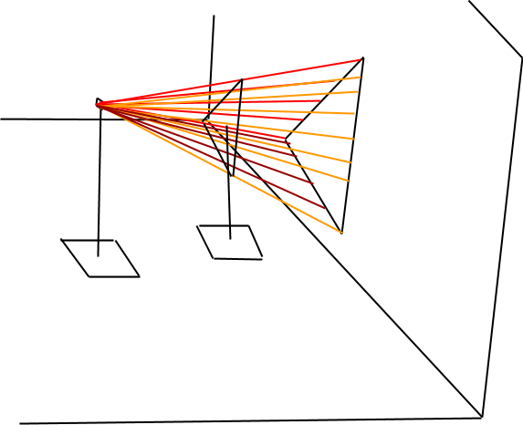

About the course
This course is first scheduled to be taught Fall ’15 at SHC. It will
be cross listed ART 102 Drawing - MTH 183 Contemporary Math. Students will be
able to select which course they get credit for.
This page is actively under development. Please email me if you have any thoughts!
Topics
Main topics: almost in the order they will be taught.
(Wanda) - how to draw - measuring
technical drawing
- enforces measuring and detail, drawings without perspective will make them
want/appreciate perspective when they get it the next week
- expanded gear works, screws,
- characterized by measurements and scale (flat) drawings of the object from different profiles.


geometric object drawings.
(Tony) - infinity, loosely leading up to perspective, briefly discuss the connection to religion
(Wanda) - perspective - checker patterns on floors
(Tony) - Fantastic Example mosaic tile patterns, tilings, symmetry
(Wanda) - adv. drawing with perspective
(Tony) - Fibonacci
(Wanda) - scientific drawing
natural high detail representations.
Sibley’s birds, Butterflies, plants
follow how-to-draw guides: Flea, Mosquito, Salmon, Angel Fish, beetle, Crab :: http://edtech2.boisestate.edu/bretcrane/502/webquest/intro.html
Send out into nature to do find own object.
(Tony)
(Wanda) drawing tessellations
misc other math+art topics: order inconsequental
origami
Jordan curves
Fractals!
students could draw action shots:
show and tell:
Group Projects:
Felice Varini - projective geometry
shadow box
string shadows
- Inspired by TV show ‘Dexter’
- Instructions: Take two stands. The top of one stand acts as a light source. The second stand holds an object to be projected. Run yarn from the ‘light source’ adjacent to the ‘object’ and tape to the wall. The outline of the sting displays the boundary of the shadow.
- 
Interactive Python Turtle Factal Animations
Von Koch Snowflake
Fractal Tree
Serpenski Triangle
Dragon Fractal